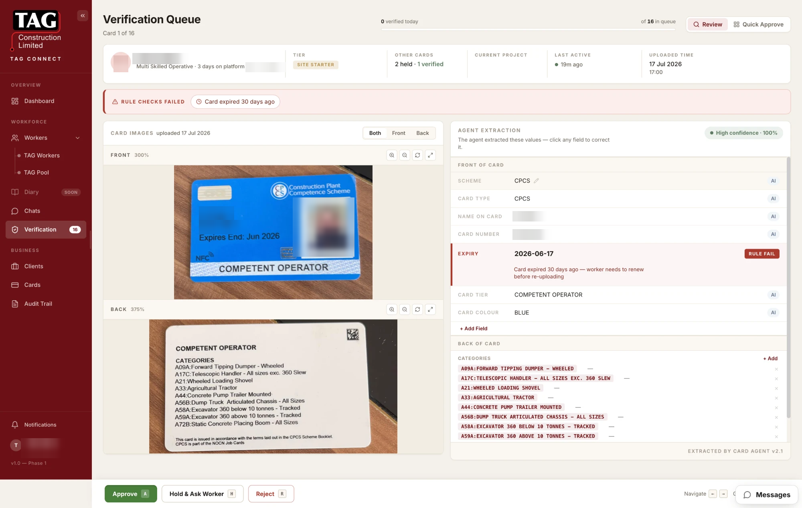

6. Verifying documents¶
This chapter covers the core recruiter job: reviewing the documents workers upload and deciding whether to trust them. Verification is what turns an uploaded photo into a credential the whole platform can rely on — worker tiers, compliance statuses and reports all build on the decisions you make here.
Your role in one sentence: the system reads each card for you; you judge whether it read it correctly and whether the card itself is genuine and current. You are adjudicating, not re-typing.
6.1 How the verification queue works¶
Every document a worker uploads lands in the verification queue, reached from Verify in the left sidebar. The badge on the sidebar item shows how many documents are waiting.
The queue is finite and ordered — the top bar shows your position ("Card 3 of 23 · 20 remaining") and a progress bar, so a review session has a clear end. Documents wait in the queue until a recruiter approves or rejects them; while a document is unverified, it earns the worker nothing.
While you have a card open, it is locked to you — colleagues see it as in review and cannot act on it at the same time.
6.2 Reviewing a single card¶
Opening a card from the queue shows the review screen. Read it in this order:
① The worker context bar (top). Who uploaded this: photo, name, trade, time on platform, tier, how many other cards they hold, current project, and when they were last active. This is your plausibility check — a scaffolder uploading a scaffolding card with three other verified cards reads very differently from a brand-new account's first upload.
② The red-flag bar. If the system found anomalies, they appear here as chips — for example DOB mismatch (date on card differs from the profile), Expired, Possible duplicate, or Photo mismatch. No red-flag bar means the system found nothing wrong — that absence is itself information: clean cards deserve a faster pass.
③ The card image (left). Zoom, rotate, and open fullscreen. When the system is unsure about a specific area of the card, that region is highlighted so you can compare it against the extracted value directly.
④ The extracted fields (right). The system reads every field off the card and shows its confidence visually: fields it is sure about appear small and dimmed; fields it is unsure about appear enlarged with a coloured background and a label such as CONFLICT or EXPIRED. Give your attention where the screen puts it — the big fields are the ones that need your eyes.

Correcting a field¶
If the system read a field wrongly:
- Click the pencil icon on the field.
- Type the correct value exactly as printed on the card — including punctuation and format (a registration number like
D/618/4129is entered with its slashes, never reformatted). - Click away to save.
Your correction is part of the approval — approving a card confirms the fields as shown, including your edits. Corrections also teach the system: consistently corrected patterns improve future extractions.
6.3 Approve, hold or reject¶
Three actions, three keyboard keys:
| Action | Key | When to use it | What happens next |
|---|---|---|---|
| Approve | A | The card is genuine, current, and every field is correct (after your edits) | Card becomes verified — it starts counting toward the worker's tier and compliance. The worker sees it as confirmed. |
| Hold | H | You need something before deciding — a colleague's opinion, a check with the worker | Card stays in the queue marked held; nothing changes for the worker yet. |
| Reject | R | The card is unreadable, wrong, expired beyond use, or not what it claims to be | You choose a reason; the worker is told in plain words what was wrong and how to fix it. The card never counts. |
Move between cards with J (next) and K (previous); press G for the grid view (section 6.5).
Approving is a compliance act
Every approval is recorded permanently in the audit trail — who approved, when, and the field values confirmed. If a client or regulator later asks "how did you know this worker held a valid CSCS on this date?", your approval is the answer. Approve only what you have actually looked at.
Rejection reasons¶
Choose the reason that tells the worker what to do, not just what was wrong:
| Reason | The worker is told |
|---|---|
| Photo unclear | "The photo wasn't clear enough to read. Try again in better light, flat on a table." |
| Wrong document | "This doesn't look like the card we asked for — check and upload the right one." |
| Card expired | "This card has run out. Renew it and upload the new one." |
| Details don't match | "Some details on the card don't match your profile — check both and resend." |
| Back side needed | "We need the back of the card too — upload both sides." |
6.4 The verification loop — what the worker sees¶
Verification is a loop between two screens: the worker's phone and your dashboard.
While the card sits in your queue, the worker's app shows "being checked — nothing more for you to do". Queue speed is therefore worker experience: a new worker stays at the New Hand tier until their first document is verified, so a queue that turns around within a day keeps onboarding feeling fast.
Requesting a re-upload¶
Rejecting with a reason automatically asks the worker to re-upload. To request a re-upload from elsewhere (a worker profile, or a card verified earlier that now needs a better image), use Request re-upload on the card — the worker gets the same plain-words message, and the new submission comes back through the queue.
6.5 Quick Approve — clearing clean cards in bulk¶
Press G or choose the grid view. Quick Approve shows only cards the system is highly confident about with no anomalies found:
- Clean cards appear pre-selected with a green ring.
- Any card with a doubt appears unselected with an orange Inspect chip — click it to open the full single-card review.
- Glance over the selected cards, untick any you want to look at properly, and click Approve selected (N).
There is deliberately no "approve all" and no bulk reject — every approval, even in bulk, is a per-card decision you have visibly confirmed.
6.6 Uploading a card on a worker's behalf¶
When a worker hands you a physical card or emails a photo, you can upload it for them: from the worker's profile choose Upload on behalf, photograph or attach the image, and confirm. Values the system extracts are shown with a VERBATIM badge; anything you type by hand is marked ENTERED — the difference is recorded, and the card then joins the verification queue like any other upload (a second person approves it; you can't approve your own manual entry).
6.10 Keyboard shortcuts¶
| Key | Action |
|---|---|
| A | Approve the open card |
| H | Hold |
| R | Reject (opens reason picker) |
| J / K | Next / previous card |
| G | Grid (Quick Approve) view |
6.7 What approving actually triggers¶
An approval is never just a green tick — it cascades:
- The card becomes the worker's verified evidence for any requirement it satisfies — their compliance status can flip green off the back of it.
- Their completeness score recalculates, and if a threshold is crossed, their tier changes — the worker's phone shows the promotion moments later. For a new worker, your first approval is literally the event that lifts them out of New Hand.
- A permanent audit entry records you, the timestamp, and the confirmed field values.
Rejection cascades too: the worker gets the plain-words reason as an action card, the document counts for nothing, and the same permanent record is written. Understanding the cascade is why queue speed matters — every card sitting unreviewed is a worker whose tier, compliance, and deployability are frozen.
6.8 The red-flag glossary¶
| Chip | What triggered it | How to judge it |
|---|---|---|
| DOB mismatch | Date of birth read from the card differs from the worker's profile | Open the profile from the context bar. Typo on one side → correct it (the fix is logged); genuinely different person's card → reject: details don't match |
| Expired | The card's expiry date has passed | Usually reject: card expired. Exception — a card uploaded as historical evidence rather than current competence: judge against why it was requested |
| Possible duplicate | A very similar card already exists for this worker | Compare the two: a renewal (newer dates, same registration number) is legitimate — approve the new; a genuine double-submission → reject the duplicate |
| Photo mismatch | The cardholder photo doesn't resemble the profile photo | The serious one. Compare carefully at zoom; unresolved doubt → Hold and raise it, don't approve on hope |
6.9 Edge cases & judgment calls¶
Two cards of the same type. Normal and fine — a worker with an expired CSCS and its valid renewal is exactly what renewal looks like. The platform judges by the valid one; you don't need to delete the old card, and its history stays in the trail.
The card is genuine but the details are stale (old address, name changed since marriage). Verify what the card attests — its qualification and validity. Profile details are corrected on the profile, not by rejecting a real card.
You can read the card but the system barely could (worn card, odd variant). Correct every field yourself against the image and approve — your eyes outrank the extraction, and your corrections teach it.
You're not sure the card type is what it claims. Unfamiliar scheme, odd layout — Hold and check with a colleague or the scheme's own register. An approval you couldn't defend later is worse than a day's delay.
The worker is standing next to you asking you to hurry. The queue doesn't know about social pressure, and neither should your judgment. The standard is the same whether the worker is watching or not — that consistency is what your approvals are worth.
You realise a past approval was wrong. It can't be unhappened — the trail is honest — but it can be corrected: request a re-review/re-upload, reject properly this time, and the record shows both the error and the fix. A visible correction is a good audit story; a quiet one isn't possible, by design.
The whole chapter as one flow¶
Everything above, drawn as a single decision map — queue mechanics, all four red-flag trees, the three-way decision, and the approval cascade. When in doubt mid-review, find your position on this map:
flowchart TD
A(["Open Verify"]) --> B{"Queue empty?"}
B -- "Yes" --> B1(["Inbox zero — done"])
B -- "No" --> C{"Work in bulk or one by one?"}
C -- "Bulk (G)" --> QA["Quick Approve grid"]
QA --> QA1{"Card pre-selected (clean, high confidence)?"}
QA1 -- "Yes" --> QA2["Glance check the card"]
QA2 --> QA3{"Still comfortable?"}
QA3 -- "Yes" --> QA4["Leave ticked"]
QA3 -- "No" --> QA5["Untick — open individually"]
QA1 -- "No (Inspect chip)" --> QA5
QA4 --> QA6["Approve selected (N)"] --> CASC
QA5 --> D
C -- "One by one" --> D["Open next card"]
D --> E{"Locked by a colleague?"}
E -- "Yes" --> E1["Skip with J"] --> D
E -- "No" --> F["Card locks to me"]
F --> G["Read worker context bar"]
G --> H{"Upload plausible for this worker?"}
H -- "Odd (first upload, wrong trade)" --> H1["Raise scrutiny — continue carefully"]
H -- "Yes" --> I
H1 --> I{"Red-flag chips present?"}
I -- "No flags" --> J{"Any low-confidence (enlarged) fields?"}
J -- "No" --> K["Fast pass: image vs fields"]
J -- "Yes" --> J1["Compare highlighted card region to the field"]
J1 --> J2{"Extraction correct?"}
J2 -- "Yes" --> K
J2 -- "No" --> J3["Pencil-edit the field — type EXACTLY as printed, never reformat"]
J3 --> K
K --> DEC
I -- "Flags" --> FL{"Which flag?"}
FL -- "DOB mismatch" --> M1["Open profile from context bar"]
M1 --> M2{"Where is the error?"}
M2 -- "Profile typo" --> M3["Fix profile (change is logged)"] --> DEC
M2 -- "Card misread" --> M4["Edit the field"] --> DEC
M2 -- "Genuinely different person" --> RJ
FL -- "Expired" --> N1{"Uploaded as current competence?"}
N1 -- "Yes" --> RJ
N1 -- "Historical evidence" --> N2{"Does it serve the purpose it was requested for?"}
N2 -- "Yes" --> DEC
N2 -- "Unsure" --> HOLD
FL -- "Possible duplicate" --> O1["Compare with the existing card"]
O1 --> O2{"Same registration no, newer dates?"}
O2 -- "Yes — it's a renewal" --> O3["Approve the new; old card stays (history intact)"] --> DEC
O2 -- "No — true duplicate" --> RJ
FL -- "Photo mismatch" --> P1["Zoom-compare cardholder vs profile photo"]
P1 --> P2{"Doubt resolved?"}
P2 -- "Yes" --> DEC
P2 -- "No — never approve on hope" --> HOLD
DEC{"Decision"} -- "A" --> APP["APPROVE"]
DEC -- "R" --> RJ["REJECT"]
DEC -- "H" --> HOLD["HOLD"]
HOLD --> HO1["Check with colleague / scheme register"]
HO1 --> HO2{"Resolved?"}
HO2 -- "Genuine" --> APP
HO2 -- "Not genuine" --> RJ
HO2 -- "Still unsure" --> HO3["Stays held in queue"] --> D
RJ --> R1{"Pick the reason (tells the worker what to DO)"}
R1 --> R2["Photo unclear / Wrong document / Expired / Details mismatch / Back side needed"]
R2 --> R3["Worker receives action card with one-tap fix"]
R3 --> R4{"Worker re-uploads?"}
R4 -- "Yes" --> R5["New submission re-enters the queue"] --> D
R4 -- "No" --> R6["Worker stays incomplete — nudge via Flow 5"]
APP --> CASC["THE CASCADE"]
CASC --> S1["Permanent audit entry: who, when, confirmed values"]
CASC --> S2{"Satisfies a compliance requirement?"}
S2 -- "Yes" --> S3["Worker's compliance can flip green"]
CASC --> S4["Completeness score recalculates"]
S4 --> S5{"Tier threshold crossed? (20 / 35 / 70)"}
S5 -- "Yes" --> S6["Tier changes — worker's phone shows it in moments"]
S6 --> S7{"First time reaching Site Strong?"}
S7 -- "Yes" --> S8["Recognition moment fires (once ever)"]
S5 -- "No" --> S9["Silent progress inside the band"]
S3 --> T
S8 --> T
S9 --> T{"More cards in queue?"}
T -- "Yes (J)" --> D
T -- "No" --> B1This diagram also lives in the product flow maps with its six siblings.
Troubleshooting this chapter¶
| You see | It means | Do this |
|---|---|---|
| A card you approved shows "Approved" but reappears | The save didn't complete (rare) | Reopen the card and check its status before re-approving |
| A card is locked and you can't open it | A colleague has it open | Move on with J; it unlocks when they finish |
| Fields all look correct but a red flag shows | The flag concerns cross-checks (e.g. profile DOB), not the card text | Open the worker's profile from the context bar and compare |
| A worker says "my card vanished" | It was rejected and awaits re-upload | Check the worker's cards for the rejected status and reason |
Was this page helpful? Tell us what was missing — feedback shapes the next update.